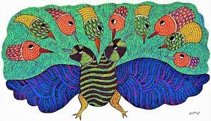

MADHYA PRADESH

Gond painting is a famous folk art of the Gond tribal community of central India. It is done to preserve and communicate the culture of the Gond tribal community. Gond tribal art includes folk dances, folk songs, and Gond paintings.
The present-day Gond paintings have evolved from Digna and Bhittichitra.
The Gonds paint Digna, a traditional geometric pattern on the walls and floors of the houses.
Bhittichitra is painted on the walls of houses, and these paintings include images of animals, plants, and trees.
Women use natural colors to paint the walls and floors of their homes.